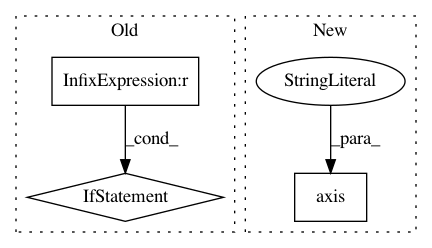

238dcd48412361f669bc41ee48995266ac168ee8,beginner_source/transfer_learning_tutorial.py,,visualize_model,#Any#Any#,238
Before Change
imshow(inputs.cpu().data[0],
title="pred: {}".format(dset_classes[labels.data[0]]))
if i == num_images - 1:
break
////////////////////////////////////////////////////////////////////////////////////////////////////////////////////////////////////////////
// Finetuning the convnet
// ----------------------
//
// Load a pretrained model and reset final fully connected layer.
//
model_ft = models.resnet18(pretrained=True)
num_ftrs = model_ft.fc.in_features
model_ft.fc = nn.Linear(num_ftrs, 2)
After Change
for j in range(inputs.size()[0]):
images_so_far += 1
ax = plt.subplot(num_images//2, 2, images_so_far)
ax.axis("off")
ax.set_title("predicted: {}".format(dset_classes[labels.data[j]]))
imshow(inputs.cpu().data[j])
if images_so_far == num_images:
In pattern: SUPERPATTERN
Frequency: 3
Non-data size: 3
Instances
Project Name: pytorch/tutorials
Commit Name: 238dcd48412361f669bc41ee48995266ac168ee8
Time: 2017-04-11
Author: sasankchilamkurthy@gmail.com
File Name: beginner_source/transfer_learning_tutorial.py
Class Name:
Method Name: visualize_model
Project Name: nilearn/nilearn
Commit Name: 9b9095f877f603d91495c72f91e4fddf61f1724e
Time: 2019-07-22
Author: jerome@dockes.org
File Name: examples/02_decoding/plot_haxby_stimuli.py
Class Name:
Method Name:
Project Name: daavoo/pyntcloud
Commit Name: 0da94c2fc76a74e701b653f5b76f8066b4305cdc
Time: 2020-05-13
Author: marcus.wallbaum@gmail.com
File Name: pyntcloud/structures/voxelgrid.py
Class Name: VoxelGrid
Method Name: plot